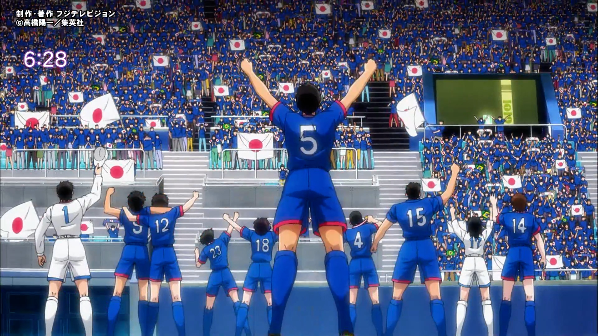

长友佑都 ×《队长小翼》联动原创动画 キャプテン翼 オリジナルアニメ / FNS27時間テレビ「にほんのスポーツは強いっ！」
2018 版 TV 动画《队长小翼》的联动原创短篇。日本国脚长友佑都以本人角色登场，与大空翼、岬太郎、若林源三并肩作战，在东京奥运会男子足球决赛的舞台上迎战足球王国巴西。 全 1 话约 3 分钟，由原作者高桥阳一监修、David Production（デイヴィッドプロダクション）制作，2019 年 11 月 3 日于富士电视台系《FNS27時間テレビ》首播。
在线观看
以下为 B 站转载的联动短片正篇，全 1 话约 3 分钟。点击播放即可观看；如需更高画质或原站信息，可前往 B 站原视频页面。
基本资料
- 原名
- キャプテン翼 オリジナルアニメ（FNS27時間テレビ 联动短篇）
- 中文译名
- 《长友佑都 ×〈队长小翼〉联动原创动画》（暂译）
- 形式
- 联动原创动画短片（全 1 话）
- 片长
- 约 3 分钟
- 首播
- 2019.11.03 早晨 6:20 前后（富士电视台系《FNS27時間テレビ》「国宝にんげん」环节）
- 重播
- 同日（11 月 3 日）下午 1:40 前后
- 播出节目
- 《FNS27時間テレビ にほんのスポーツは強いっ！》（2019.11.02 18:30 – 11.03 21:54，该年首次由夏季移至 11 月播出）
- 监修
- 高桥阳一（角色设定图亦由其亲绘并公开）
- 制作
- デイヴィッドプロダクション（David Production）
- 出演
- 长友佑都（本人役）；大空翼、岬太郎、若林源三等 2018 版动画主要角色
这是一部什么样的短片
富士电视台系的 27 小时直播企划《FNS27時間テレビ》在 2019 年首次把档期从夏季移到了 11 月，主题定为「にほんのスポーツは強いっ！」（日本的体育很强！）。 作为其中的一环，节目方面企划了一部《队长小翼》的完全原创联动短片——不是把漫画既有篇章动画化，而是为这一晚专门新写的故事。
短片由原作者高桥阳一监修，并延续 2018 版 TV 动画的制作班底 David Production 担纲制作。 官方还一并公开了高桥亲绘的长友佑都角色设定图（正面／背面，身着日本队球衣），把这位现役国脚的形象亲手落进了「小翼的世界」。
就联动进程而言，官方门户 @tsubasa_news 于 2019 年 10 月 23 日下午 4:09 发布 OA（播出）决定； 11 月 1 日下午 6:00，节目官方 @fns27htv_fns 宣布动画制作完成，同时预告首播定档 11 月 3 日早晨 6:20 前后，并公开了首波剧照。
故事：提前上演的奥运决赛
舞台设在东京奥运会男子足球决赛。大空翼、岬太郎、若林源三与长友佑都（本人役）并肩作战，对手是足球王国巴西。 官方把这支临时混编的队伍称作一次「プレミアムアニメ」（高级定制动画）——現实中的国脚与虚构的角色在同一块球场上同场竞技。
需要留意时间上的错位：本片制作于 2019 年，彼时东京奥运尚未举办（后受疫情影响延至 2021 年才举行）， 因此这场决战并非某场真实比赛的改编，而是节目为一句「日本的体育很强」所做的提前虚构演绎。
第三方资料进一步补充了若干场面细节（属二手转述，未获官方文字确认，仅供参考）：比赛被设定在加时赛尾声、比分 3–3 的胶着时刻， 长友作为「老将」替补登场；其家人亦被画在看台之上；两队球衣样式接近漫画《队长小翼 RISING SUN》时期的设计。
剧照
取自短片正片约 3 分 18 秒处的静止画面（1920×1080 原始分辨率，未做缩放处理）。

同一晚的高桥老师
节目并不只播出了那 3 分钟。同一晚的直播中，还对高桥阳一做了密着取材：関ジャニ∞（关杰尼∞）的村上信五登门造访他的工作室， 聊起《队长小翼》的诞生秘话，也谈到了贯穿整部作品的那记必杀——倒挂金钩（オーバーヘッドキック）究竟是怎么构思出来的。节目中还公开了珍贵原画。